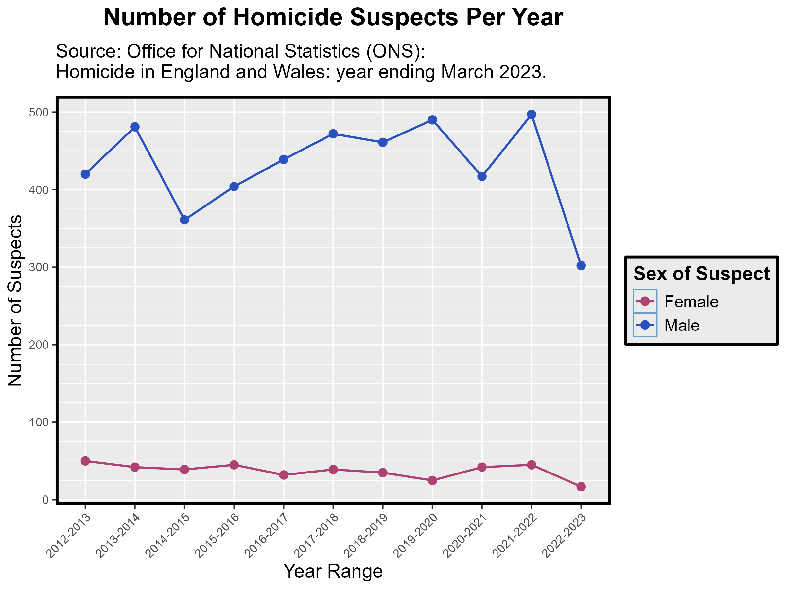

Visualising Homicide Convictions by Sex: Male vs. Female Suspects (2012-2023)
Registration number: 240188795
2024-12-10
Data Origins
This data was found on the Office for National Statistics website in an article titled ‘Homicide in England and Wales: year ending March 2023’. The dataset is an Excel Workbook containing multiple sheets showing different homicide statistics.
This project is focused on visualising the number of suspects convicted of homicide between April 2012 and March 2023, categorised by sex. This visualisation allows us to compare male and female homicide convictions and see which sex are more likely to be convicted of homicide. It also details the trend in homicide frequency over the last 10 years.
Research Question
Are males or females historically more likely to be convicted of homicide?
This visualisation aims to show a clear distinction in the frequency of males compared to females who have been convicted of homicide. It also demonstrates the potential trend in homicide frequency in the last 10 years.
Importing the Data
To upload the dataset into R, I used the ‘here’ function as this allows the code to work on any computer which has downloaded the ‘Data’ folder for this project. As the data is an Excel Workbook with a lot of sheets, I only wanted to upload and analyse a particular sheet. The one I chose was ‘Worksheet_31’ as this includes suspects for all offences initially ruled a homicide between April 2012 and March 2023.
# Need to install and load the necessary packages for this whole project
install.packages("here")
install.packages("tidyverse")
install.packages("dplyr")
install.packages("readxl")
install.packages("gganimate")
install.packages("gifski")
install.packages("png")
install.packages("knitr")
library(here)
library(tidyverse)
library(readxl)
library(dplyr)
library(gganimate)
library(gifski)
library(png)
library(knitr)
# Now we need to tell R the file path to choose
file_path <- here("Data", "homicideyemarch23appendixtablesfinal1.xlsx")
# As the raw dataset is so large, we're specifying which sheet to use
# We're also going to skip the first 6 rows of the sheet as this is just information about the table
data <- read_excel(file_path, sheet = "Worksheet 31", skip = 7)
# View the first few rows of the imported data
head(data)Cleaning the Data
In the raw data, this worksheet shows the number of suspects convicted on different counts of homicide, but also the percentages of suspects convicted of homicide by age and sex. We do not want to include the percentage data as this is not representative unless we know the raw numbers the percentages are generated from (which we do not) so we want to remove this. We also want to remove any other unnecessary information in the dataset. For example, there are a few rows with missing values so have been filled with N/A which we need to remove. These missing values are simply from it containing only text about the tables in the raw dataset.
# Need to remove all of the N/A data in the dataset
filtered_data <- data %>% drop_na()
# To check this has removed all N/A values we use the following function
if (sum(is.na(filtered_data)) == 0) {
print("No missing values")
} else {
print(paste("Count of total missing values:", sum(is.na(filtered_data))))
}
# Now we want to remove the percentages data
# The percentage data begins on row 28 in the dataset so we only want to include rows 1 to 27
filtered_data <- filtered_data[1:27, ]
# View the first few rows of the filtered dataset
head(filtered_data)
# View column names
names(filtered_data)
# Rename a couple of the column names to remove the 'note...' as this is only relevant when viewing the data in Excel
filtered_data <- filtered_data %>% rename("Age of Suspect" = "Age of suspect [note 65]", "Apr 2020 to Mar 2021" = "Apr 2020 to Mar 2021 [note 66]")
# View column names again to see if the changes have been made
names(filtered_data)We remove the N/A values before specifying which rows to keep as the first row of the ‘data’ dataset only has N/A values, so if we removed the percentages data before we would delete the total values row of the data we’re interested in. So to aid visualisation we clean the data by removing N/A values first, and then specify the rows of data we want to analyse and visualise.
Data Preparation
As the dataset currently has a lot of columns, to be able to visualise it we need to transform it from a wide format to a long format. This is done using the ‘pivot_longer’ function.
data_long <- pivot_longer(data = filtered_data,
names_to = "Year",
values_to = "Frequency",
cols = c("Apr 2012 to Mar 2013", "Apr 2013 to Mar 2014", "Apr 2014 to Mar 2015", "Apr 2015 to Mar 2016", "Apr 2016 to Mar 2017", "Apr 2017 to Mar 2018", "Apr 2018 to Mar 2019", "Apr 2019 to Mar 2020", "Apr 2020 to Mar 2021", "Apr 2021 to Mar 2022", "Apr 2022 to Mar 2023"))
# Check first few rows of the longer dataframe
head(data_long)The final part of the data preparation is to create a final dataframe we can use in the visualisation which contains only the columns and rows we are going to use.
# Create a new dataframe to use in the visualisation
# Remove the rows which display both male and female so we can compare just male and female
# And include all ages
final_data <- data_long %>% filter(`Sex of Suspect` %in% c("Male", "Female") &
`Age of Suspect` == "Total [note 66]")
# The year data runs April to March (the UK tax year)
# To make visualisation on a graph easier we need to remove the month and just keep the year
# Extract the start and end years using a string function
# Create a `Simple Years` column to plot the year range on a bar chart
# Then create a Mid_Year column to be able to plot the tax year (e.g. 2012-2013) on an animated plot (needed for later) as this has to be numeric for the animation to work (`Simple Years` is a character column)
final_data <- final_data %>%
mutate(Start_Year = as.numeric(str_extract(Year, "(?<=Apr )[0-9]{4}")),
End_Year = as.numeric(str_extract(Year, "(?<=Mar )[0-9]{4}")),
Mid_Year = (Start_Year + End_Year) / 2,
`Simple Years` = paste(Start_Year, End_Year, sep = "-"))
# Check the Frequency column is numeric (required for visualisation)
final_data$Frequency <- as.numeric(final_data$Frequency)
# Check the Mid_Year column is numeric (required for the animated visualisation)
final_data$Mid_Year <- as.numeric(final_data$Mid_Year)
# Change the `Sex of Suspect` column from character to factor vector so we can categorise by male and female (required for the visualisation)
final_data$'Sex of Suspect' <- factor(final_data$'Sex of Suspect', levels = c("Female", "Male"))
levels(final_data$'Sex of Suspect')
# Check the first few rows of the final dataset
head(final_data)Visualising the Data
Initially, I visualised the data as a stacked bar chart with the female frequency bar on top of the male frequency bar. This bar chart made it difficult to determine the numbers of female suspects since they are so small compared to the male suspects.
# Stacked bar chart:
p <- ggplot(final_data, aes(x=`Simple Years`, y=Frequency, fill = `Sex of Suspect`)) +
geom_bar(stat = "identity", colour='black', width = 0.75) +
scale_y_continuous(expand = c(0,0), limits = c(0, 600)) +
scale_x_discrete() +
scale_fill_manual(values = c("Male" = "#7A67EE", "Female" = "#FF6A6A")) +
ggtitle("Number of Homicide Suspects Per Year") +
theme(
# Set font and colours for background, titles and legends
aspect.ratio = 1/2,
panel.background = element_rect(fill = "#BFD5E3", colour = "#6D9EC1", linetype = "solid"),
axis.text.x = element_text(angle = 45, hjust = 1, family = "sans"),
axis.text.y = element_text(family = "sans"),
axis.title.x = element_text(size = 14, face = "plain", family = "sans"),
axis.title.y = element_text(size = 14, face = "plain", family = "sans"),
legend.title = element_text(size = 14, face = "bold", family = "sans"),
legend.background = element_rect(fill = "#BFD5E3",linetype = 1, colour = "black", linewidth = 1),
legend.text = element_text(size = 12, family = "sans"),
plot.title = element_text(size = 18, face = "bold", hjust = 0.5, margin = margin(b = 10)),
plot.subtitle = element_text(size = 14, margin = margin(b = 10)),
panel.border = element_rect(colour = "black", fill = NA, linewidth = 2)
) +
labs(
x = "Year Range",
y = "Number of Suspects",
fill = "Sex of Suspect",
title = "Number of Homicide Suspects Per Year",
subtitle = "Source: Office for National Statistics (ONS):\nHomicide in England and Wales: year ending March 2023.")
# Save the bar chart
ggsave(here("Visualisations", "bar_chart.png"), width = 12, height = 8)Initial Visualisation
The above function was used to include the graphs in the published GitHub webpage.
To aid visualisation, I then chose a line graph to look at female suspects compared to male suspects. This is the graph I submitted for assessment.
plot <- ggplot(final_data, aes(x=`Simple Years`, y=Frequency, color = `Sex of Suspect`, group = `Sex of Suspect`)) +
geom_line(size = 0.75) +
geom_point(size = 4, shape = 20) +
scale_y_continuous( # change what the gridlines increase by to aid visualisation
breaks = seq(0, 525, by = 100),
minor_breaks = seq(0, 525, by = 25)
) +
scale_x_discrete() +
scale_color_manual(values = c("Male" = "#2A52BF", "Female" = "#AE4371")) +
ggtitle("Number of Homicide Suspects Per Year") +
theme(
# Set font and colours for background, titles and legends
panel.background = element_rect(fill = "grey92", colour = "#6D9EC1", linetype = "solid"), # change background colour to better visualise the points on the chart
axis.text.x = element_text(angle = 45, hjust = 1, family = "sans"),
axis.text.y = element_text(family = "sans"),
axis.title.x = element_text(size = 14, face = "plain", family = "sans"),
axis.title.y = element_text(size = 14, face = "plain", family = "sans"),
legend.title = element_text(size = 14, face = "bold", family = "sans"),
legend.background = element_rect(fill = "grey92",linetype = 1, colour = "black", linewidth = 1),
legend.text = element_text(size = 12, family = "sans"),
plot.title = element_text(size = 18, face = "bold", hjust = 0.5, margin = margin(b = 10)),
plot.subtitle = element_text(size = 14, margin = margin(b = 10)),
panel.border = element_rect(colour = "black", fill = NA, linewidth = 2)
) +
labs(
x = "Year Range",
y = "Number of Suspects",
color = "Sex of Suspect",
title = "Number of Homicide Suspects Per Year",
subtitle = "Source: Office for National Statistics (ONS):\nHomicide in England and Wales: year ending March 2023.")
# axis,text.x = element_text(hjust = 1, vjust = 1, family = "sans"),
#Save the line graph in a wider image format so the subtitle doesn't get cut off
ggsave(here("Visualisations", "viz240188795.png"), plot = plot, width = 12, height = 8)Improved Visualisation - Line Graph
Plot for Assessment
 To emphasise the time course of this data I animated the line graph so the points for both male and female would gradually reveal.
Animated Line Graph
# Animate the plot - plot for assessment
animated <- plot +
geom_point() +
transition_manual(Mid_Year, cumulative = TRUE) +
labs(
title = "Number of Homicide Suspects Over the Years",
subtitle = "Source: Office for National Statistics (ONS):\nHomicide in England and Wales: year ending March 2023."
) +
theme(
plot.title = element_text(size = 18, face = "bold", hjust = 0.5, margin = margin(b = 10)),
plot.subtitle = element_text(size = 14, margin = margin(b = 10, t = 10)))
if(knitr::is_html_output()){
animated
}
# Not necessary but included to see the progression over the years
if(knitr::is_html_output()){
anim_save(here("Visualisations" , "animated_line_graph.gif"), animated, renderer = gifski_renderer())
}
Conclusions
This visualisation clearly shows the massive discrepancy between male and female suspects. Addressing the research question, there is a significantly higher amount of male suspects convicted of homicide than there are females. The line graph also displays a substantial drop in homicides in the 2022-2023 tax year compared to 2021-2022. Visualising these homicide trends are important to help understand trends in criminal behaviour and homicide, which can inform efforts to prevent and address violence to hopefully be able to reduce these numbers further.
Reflections
If I had more time, to improve the animated line graph I would
include the years in the title as the animation progresses (e.g. as the
bar for 2012-2013 appears, the year range would appear in the title as
“Number of Homicide Suspects by Year: …”). I was unable to do this as
the data used to create the animation needed to be numeric, however, the
Simple Years column which includes the year range is a
character vector so cannot be used for this.
To improve the visualisation of homicide numbers over the years, the different types of homicide the suspects were convicted of (e.g. manslaughter, infanticide) could also be displayed. This could provide further understanding of the trends in criminal behaviour and homicides over the years.
References
Office for National Statistics. (2024, February 08). Homicide in England and Wales: year ending March 2023. https://www.ons.gov.uk/peoplepopulationandcommunity/crimeandjustice/articles/homicideinenglandandwales/yearendingmarch2023